Visible-light-responsive ZnO/CuO composite photocatalyst
for degradation of tetracycline in mariculture wastewater
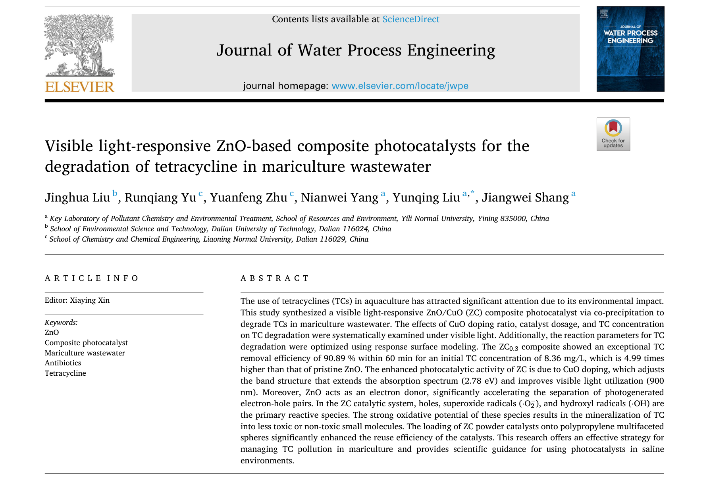
| 01 | 研究動機與文獻回顧 | Slide 3–5 |
| 02 | 奈米材料設計概念 | Slide 6 |
| 03 | 材料合成方法 | Slide 7 |
| 04 | 材料鑑定結果 | Slide 8–11 |
| 05 | 光催化降解數據 | Slide 12–13 |
| 06 | RSM 參數最佳化 | Slide 14 |
| 07 | 穩定性與實際應用 | Slide 15 |
| 08 | 降解途徑與毒性 | Slide 16 |
| 09 | 光催化機制 | Slide 17 |
| 10 | 結論 | Slide 18 |
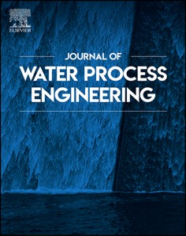
CuO 摻雜將 ZnO band gap 從 3.12 降至 2.78 eV
光吸收從 400 nm 拓展至 900 nm
1. 以共沉澱法合成不同 CuO 摻雜比例的 ZC 複合光觸媒
2. 探討 CuO 摻雜對形貌、band gap、光電性質的影響
3. 系統研究各反應參數對 TC 去除的影響，以 RSM 求最佳條件
4. 將催化劑固定於 PMSS 載體實現循環使用
5. 鑑定 TC 降解中間產物並評估毒性
6. 闡明 ZC 複合光觸媒的光催化降解機制
將 p 型半導體 CuO 與 n 型半導體 ZnO 結合，利用 PN 異質結的內建電場加速光生載子分離。
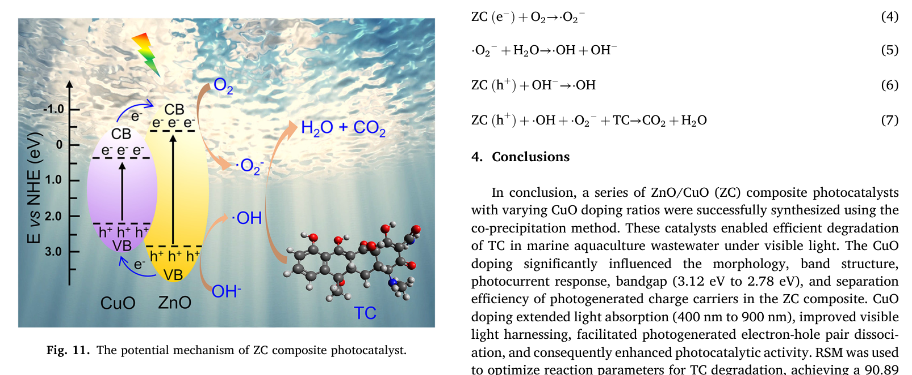
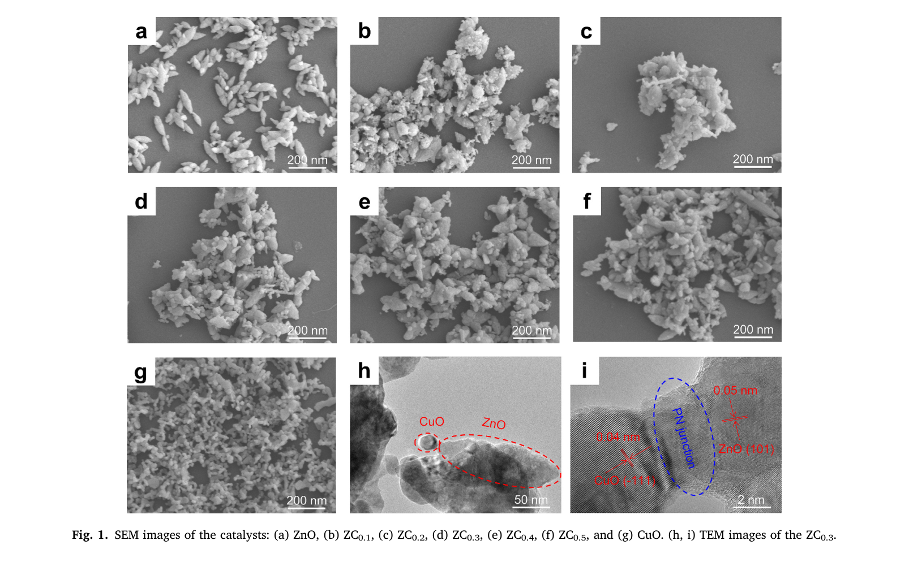
合成出來的材料到底是不是 ZnO/CuO 複合物？兩者之間有沒有真正的化學交互作用？
XRD 驗證晶體結構，XPS 檢測元素的化學狀態與電子轉移。
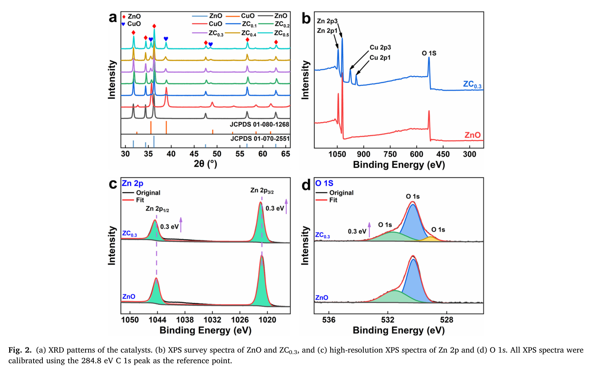
| 樣品 | band gap (eV) | 阻抗 (Ω) | k (min⁻¹) |
|---|---|---|---|
| 純 ZnO | 3.12 | 4227 | 0.003 |
| ZC₀.₁ | 2.97 | 3704 | — |
| ZC₀.₂ | 2.87 | 2371 | — |
| ZC₀.₃ ★ | 2.78 | 1906 | 0.019 |
| ZC₀.₅ | 2.88 | 1600 | — |
| 純 CuO | 1.51 | 1439 | — |
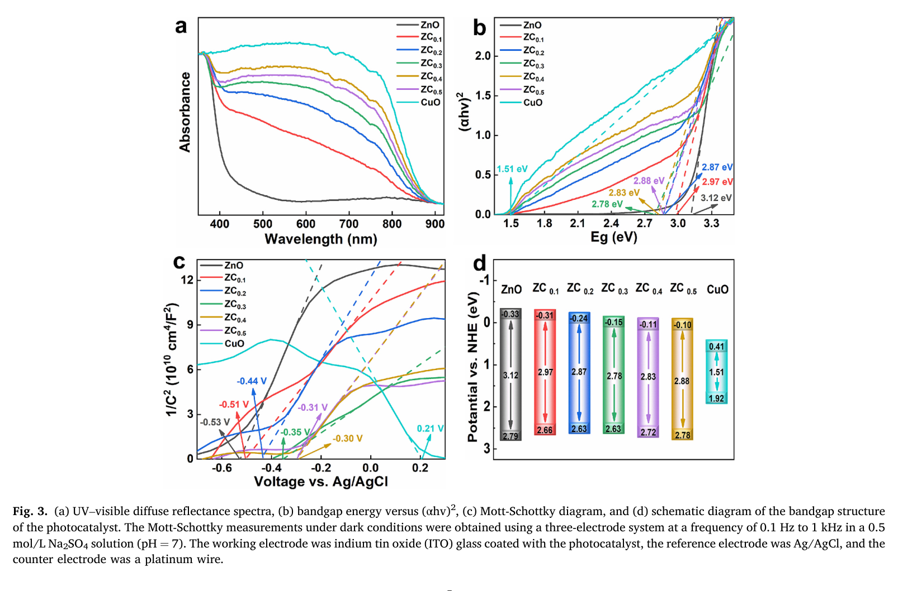
| 樣品 | 阻抗 (Ω) | 意義 |
|---|---|---|
| ZnO | 4227 | 電荷傳輸慢 |
| ZC₀.₁ | 3704 | ↓ |
| ZC₀.₂ | 2371 | ↓ |
| ZC₀.₃ | 1906 | 電荷傳輸快 |
| CuO | 1439 | 最低 |
CuO 的低 band gap 促進光生電子與空穴的分離，PN 接面降低 band gap、拓寬光吸收範圍，加速載子分離效率。
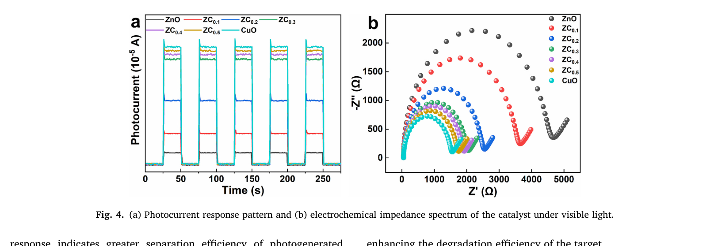
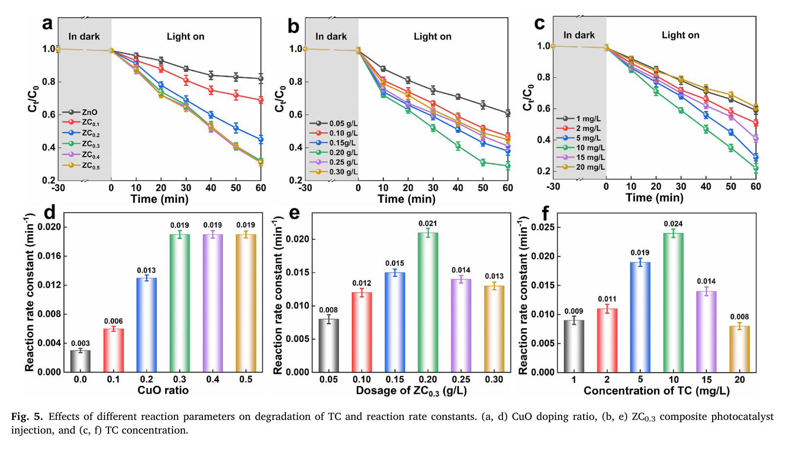
分別加入捕獲劑抑制特定活性物種，觀察去除率變化（對照組去除率 92.47%）：
| 捕獲劑 | 抑制物種 | 去除率 | 貢獻率 |
|---|---|---|---|
| KI（15 mM） | h⁺（空穴） | 39.01% | 55.91% |
| BQ（5 mM） | ·O₂⁻ | 56.98% | 38.08% |
| TBA（300 mM） | ·OH | 66.35% | 26.44% |
h⁺ > ·O₂⁻ > ·OH
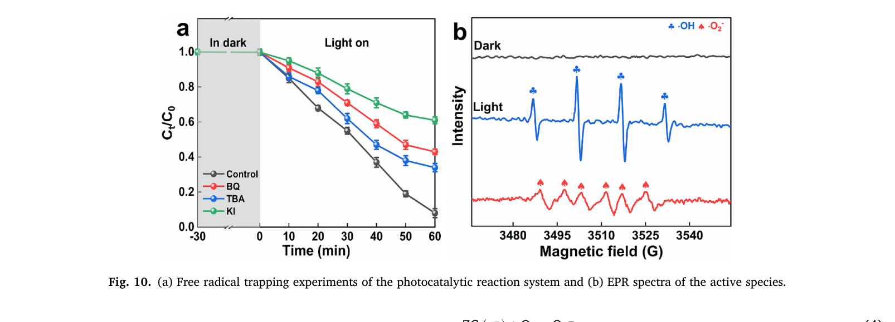
三因子三水準實驗設計：
| 因子 | 符號 | 範圍 |
|---|---|---|
| CuO 摻雜比 | X₁ | 0.1 – 0.5 |
| 催化劑用量 | X₂ | 0.10 – 0.30 g/L |
| TC 濃度 | X₃ | 5 – 15 mg/L |
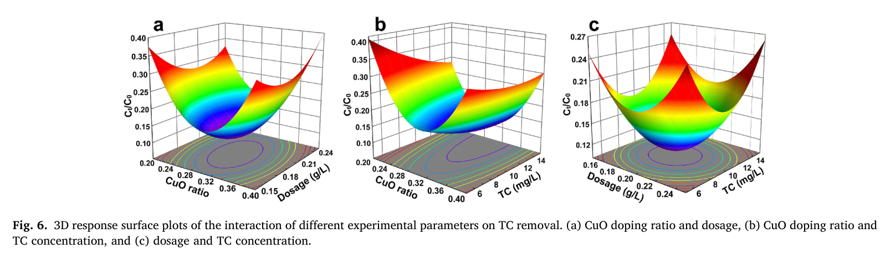
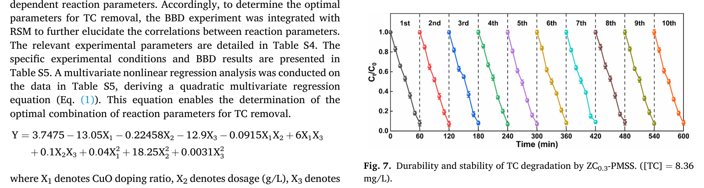
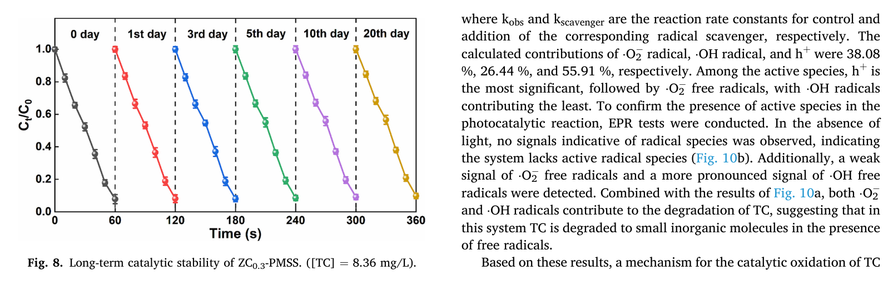
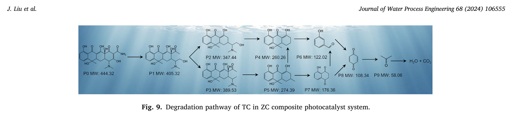
共沉澱法成功合成 ZC 複合光觸媒，band gap 從 3.12 降至 2.78 eV
60 min 內達 90.89% TC 去除率，為純 ZnO 的 4.99 倍
光吸收拓展至 900 nm，PN 異質結促進載子分離
h⁺ 為主要物種，TC 最終礦化為無毒 CO₂ + H₂O
PMSS 固定化 10 次循環 >90%，日光效果 89.96%
為海水養殖廢水 TC 光催化治理提供科學方向